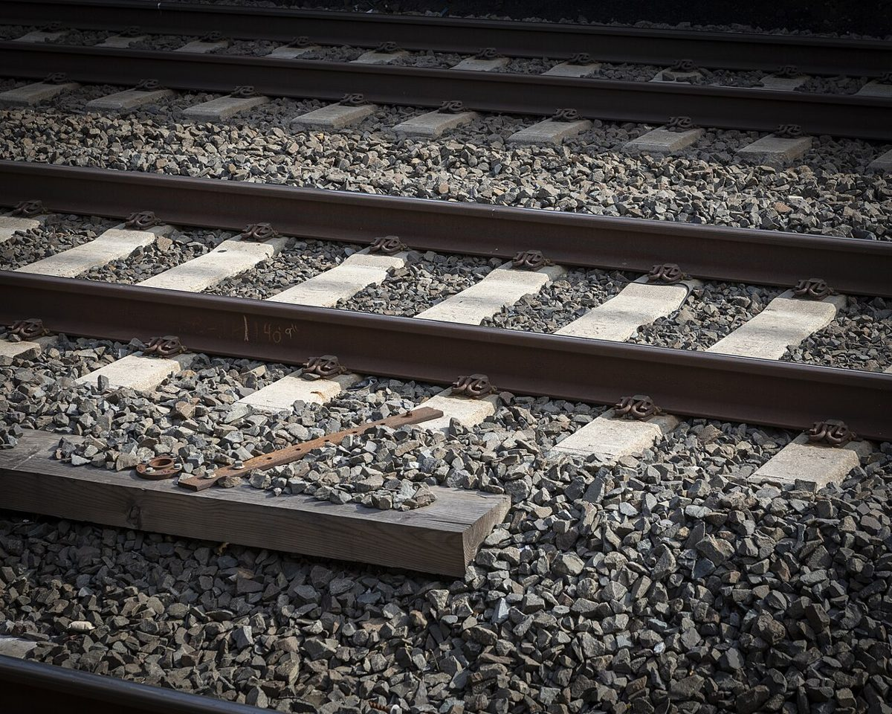

4番線
店のこと
お店について確認できているのは、所在地とInstagramのアカウントだけです。
このページの「想像してみる」部分は、制作側が想像して書いたものです。お店の実際の様子・考え・メニューとは関係がありません。
確認できていること
- 店名は「アタシカ バンホフ(Atashika Bahnhof)」、業種はカフェ
- 所在地は三重県熊野市新鹿町(〒519-4206)
- 電話番号はなし。連絡はInstagramから
- 営業時間・定休日・メニュー・価格・ご予約・駐車場は準備中
想像してみる
「バンホフ」という名前から
お店の名前の由来は分かりません。制作側は「バンホフ」という響きから、列車を待つ人や、行き交う人の気配を連想しました。もしかしたら、そんな「ひと休みのための場所」をイメージしたお店かもしれない、と想像しています(実際のお店の姿ではありません)。


